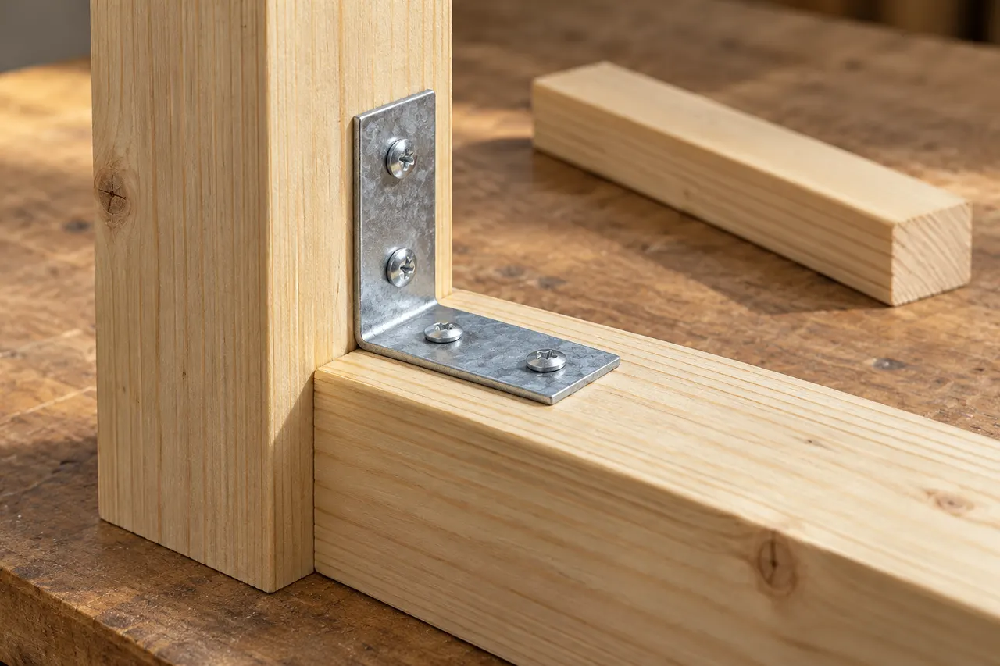
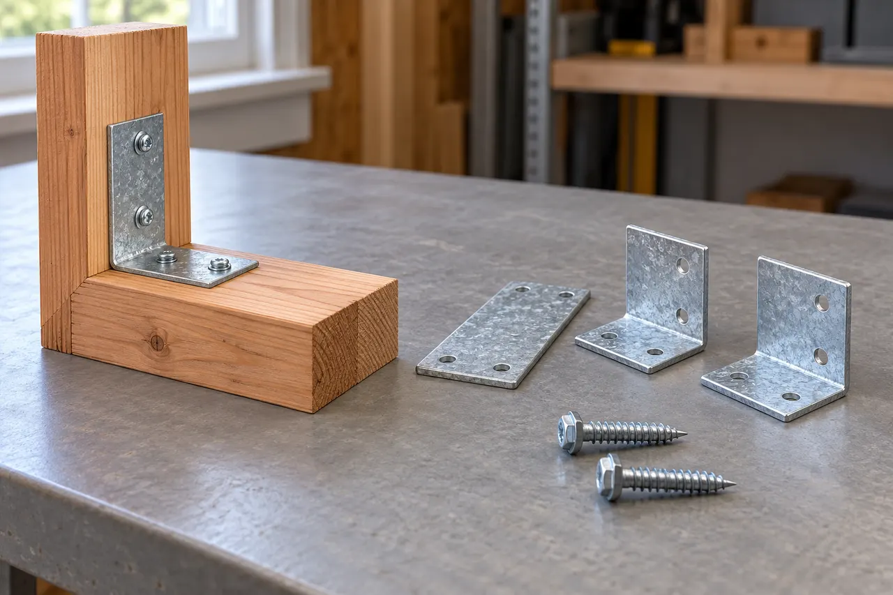

A sloped yard needs a panel strategy
Stepped and racked layouts create different ground gaps and visible lines. Review the actual grade, drainage and intended containment before choosing panel geometry.
Irving, Texas
Fence installation, replacement and repair for residential and commercial properties, including cedar privacy fences, board-on-board layouts, horizontal designs, gates, metal-post upgrades, staining and hauling.
Professional, reliable and detail-oriented from planning through completion. The craftsmanship and finished work exceeded expectations.
Read review summary · Source: Google →Top-notch communication, professionalism and attention to detail on a Jack-and-Jill bathroom renovation.
Read review summary · Source: Google →“Fair price for great work. Definitely recommend them for general repairs and maintenance.”
View public recommendation →Read customer feedback with the original source identified for every review.
View All Customer Reviews →Fencing / Irving, Texas
For fencing in Irving, this guide focuses on a sloped yard needs a panel strategy. Use it to discuss the conditions at your property and compare the proposed work.
Stepped and racked layouts create different ground gaps and visible lines. Review the actual grade, drainage and intended containment before choosing panel geometry.
If comparing proposals, put both on the same basis: measurements, preparation, exact product, accessories, finish limits and cleanup. A lower material price does not explain whether the complete installation responsibilities are equivalent.

Simpson Strong-Tie reference
Wood assemblies need a suitable species or treatment, sound supporting members and compatible connectors for the exposure.
Selection check
Review moisture exposure, end grain, ground contact, finish maintenance and fastener corrosion before selecting the lumber.
Lumber, finish and hardware can carry different terms. Ask for the actual supplier and component documents instead of assuming lifetime coverage.

Simpson Strong-Tie
Connectors transfer forces between specified framing members when installed with the correct compatible fasteners.
Selection check
Selection depends on the loads, wood treatment, exposure and connection geometry. Decorative appearance does not establish structural capacity.
Product documentation governs the selected connector. A hardware warranty does not replace structural design or cover an unspecified assembly.
QUIKRETE 5000
QUIKRETE 5000 is a concrete mix designed for higher early strength. It illustrates why a concrete specification must name the actual mix.
Selection check
A driveway often uses a specified ready-mix order. Thickness, base, reinforcement, joints, curing and access must be designed for the project; a bag example is not a driveway design.
The selected supplier’s material terms apply. Published strength values do not guarantee that an installed slab will never crack.
Stepped and racked layouts create different ground gaps and visible lines. Bring photographs, dimensions and any relevant previous repair records to the discussion.
Compare exterior wood and compatible connections, structural connectors and fasteners, bagged concrete mix reference. Specify the selected components and the preparation they require.
Agree on the fence line and ground-gap approach. A lower material price does not explain whether the complete installation responsibilities are equivalent.
Align quantities, preparation, selected product and installation boundaries, then identify exclusions and owner-supplied items. Ask for differences to be explained in writing before deciding which proposal meets the intended result.
Agree on the fence line and ground-gap approach. The written scope should also identify the selected products, work boundaries, required trade coordination and approval steps for changes.
No. These are references for comparing product categories. Availability, suitability, the exact model and the actual supplier must be confirmed for the property. A reference does not imply certification, stock or a brand affiliation.
Manufacturer coverage: Terms apply to the exact product and eligible application. Material coverage, complete-system programs and installation workmanship are different obligations. Request the current written warranty and care instructions; a warranty term is not a guaranteed service life. Generic illustrations are original explanatory artwork, not branded packaging.
Discuss the conditions at your property.
Include the project address, relevant photos and your priorities.
Stepped and racked layouts create different ground gaps and visible lines. Review the actual grade, drainage and intended containment before choosing panel geometry.
If comparing proposals, put both on the same basis: measurements, preparation, exact product, accessories, finish limits and cleanup. A lower material price does not explain whether the complete installation responsibilities are equivalent.
Scheduling, access, protection, materials, trade coordination, cleanup and any hidden conditions are reviewed before work begins.
Yes. Partial repairs may be practical when the remaining fence is structurally serviceable, the posts are stable and compatible materials are available.
Replacement may be a better option when several posts are failing, rot or storm damage is widespread, the fence is leaning throughout or repeated repairs would not provide a durable result.
Metal posts are commonly selected for improved resistance to rot and soil moisture. The best choice depends on the design, budget, existing structure and local conditions.
Yes. Single gates, double gates, hardware, demolition, disposal and hauling can be included in the written project scope.
Yes. Staining or sealing can help protect the wood and create a more consistent finished appearance after the material has reached the appropriate condition for coating.
Yes. Luna General Contractors serves homes and businesses throughout Irving and nearby communities.
Start Your Project
Tell us about your property and the work you have in mind. We can discuss the scope, access, material selections and next steps.